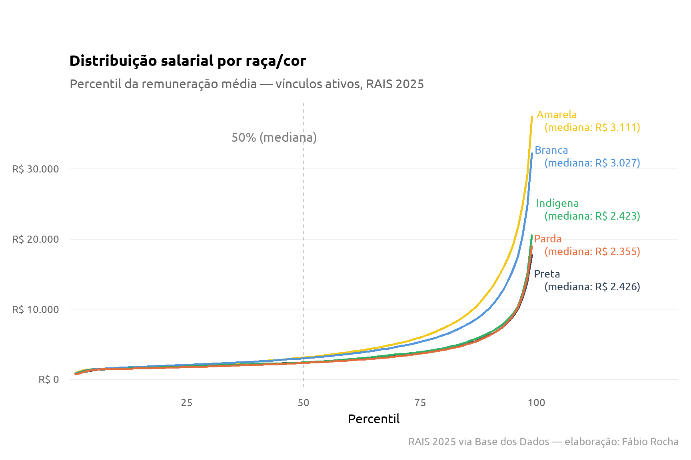
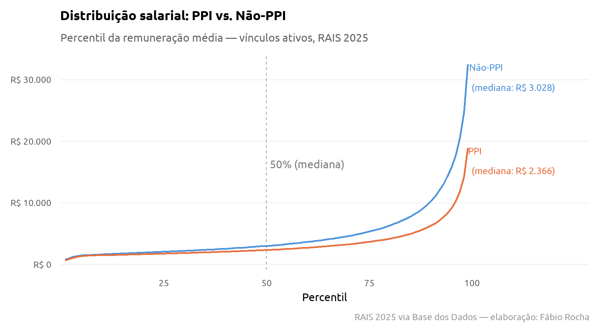
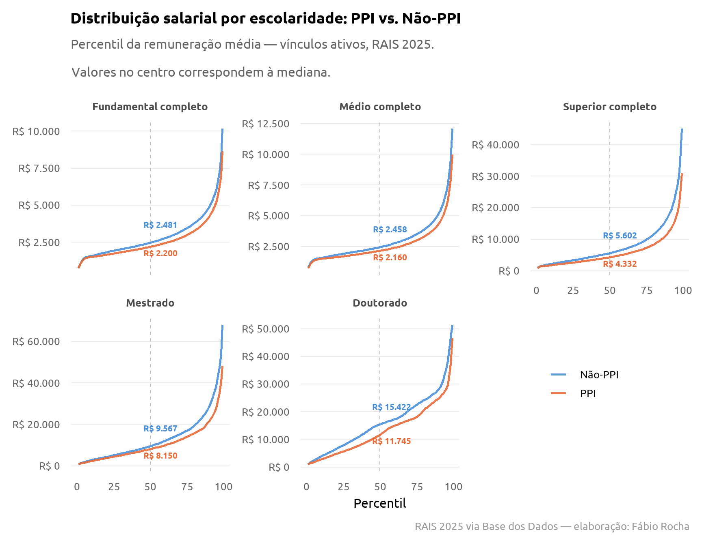

O diploma abre a porta, mas não fecha o hiato racial
RAIS
Raça
Escolaridade
Mercado de Trabalho
Desigualdade
Escolaridade eleva o salário de todo mundo, mas a diferença entre trabalhadores PPI e não-PPI cresce, em vez de diminuir, conforme sobe o nível de instrução. Microdados da RAIS 2025.
Em publicação recente, mostramos que o retorno educacional no mercado formal brasileiro se concentra na metade superior da distribuição: até o ensino superior completo, as curvas salariais por escolaridade andam próximas. Só no topo elas se separam com clareza. Depois, olhamos se o regime de contratação (CLT ou estatutário) alterava esse padrão, e alterava bastante.
Uma vez que os microdados da Rais são bastante ricos, resolvemos expandir mais a analise e perguntar: esse retorno educacional é igual para todo mundo, independente da cor?
A diferença já aparece antes de olhar escolaridade
O primeiro corte é só por raça/cor, sem controlar por nada, isto é, comparando apenas individuos de cor diferente independente da escolaridade e outras características. Branca e Amarela têm medianas próximas e mais altas (R$ 3.027 e R$ 3.111); Preta, Parda e Indígena têm medianas próximas entre si e mais baixas (R$ 2.426, R$ 2.355 e R$ 2.423). A diferença aparece desde a base da distribuição e se abre ainda mais no topo.
PPI e não-PPI
Para tornar a leitura mais direta, agregamos as cinco categorias em dois grupos: PPI (Pretos, Pardos e Indígenas, categoria usada em políticas de ação afirmativa) e Não-PPI (Brancos e Amarelos). Na mediana, um trabalhador não-PPI ganha R$ 3.028 contra R$ 2.366 de um trabalhador PPI, uma diferença de 28%. Dito de outro modo: o trabalhador PPI típico ganha cerca de 78 centavos para cada real do trabalhador não-PPI típico.

O hiato não desaparece com o diploma: ele aumenta
Aqui está o ponto central deste texto. Cruzando raça com escolaridade, o hiato entre PPI e não-PPI não encolhe conforme sobe o nível de instrução: ele cresce, tanto em reais quanto, na maior parte dos níveis, em termos percentuais:
| Escolaridade | Não-PPI | PPI | Diferença | Diferença (%) |
|---|---|---|---|---|
| Fundamental completo | R$ 2.481 | R$ 2.200 | R$ 281 | 13% |
| Médio completo | R$ 2.458 | R$ 2.160 | R$ 298 | 14% |
| Superior completo | R$ 5.602 | R$ 4.332 | R$ 1.270 | 29% |
| Mestrado | R$ 9.567 | R$ 8.150 | R$ 1.417 | 17% |
| Doutorado | R$ 15.422 | R$ 11.745 | R$ 3.677 | 31% |
Em reais, a diferença salta de R$ 281 entre quem tem apenas o fundamental completo para R$ 3.677 entre doutores, treze vezes maior. Em termos percentuais, o hiato mais que dobra entre a educação básica (13-14%) e o topo da escolaridade (29-31%), com o salto mais expressivo ocorrendo exatamente na passagem para o ensino superior completo.
A tabela de medianas já mostra o padrão geral, mas esconde a dispersão dentro de cada grupo. A tabela abaixo detalha a mesma comparação em três pontos da distribuição, dentro de cada nível de escolaridade: o primeiro quartil (P25), a mediana (P50) e o terceiro quartil (P75).
| Escolaridade | Quartil | Não-PPI | PPI | Diferença | Diferença (%) |
|---|---|---|---|---|---|
| Fundamental completo | P25 | R$ 1.934,13 | R$ 1.742,79 | R$ 191,34 | 11% |
| Fundamental completo | P50 (mediana) | R$ 2.481,19 | R$ 2.200,42 | R$ 280,77 | 13% |
| Fundamental completo | P75 | R$ 3.458,69 | R$ 2.998,48 | R$ 460,21 | 15% |
| Médio completo | P25 | R$ 1.919,15 | R$ 1.708,12 | R$ 211,03 | 12% |
| Médio completo | P50 (mediana) | R$ 2.458,26 | R$ 2.160,28 | R$ 297,98 | 14% |
| Médio completo | P75 | R$ 3.507,79 | R$ 3.008,88 | R$ 498,91 | 17% |
| Superior completo | P25 | R$ 3.355,64 | R$ 2.638,97 | R$ 716,67 | 27% |
| Superior completo | P50 (mediana) | R$ 5.602,27 | R$ 4.332,33 | R$ 1.269,94 | 29% |
| Superior completo | P75 | R$ 9.919,38 | R$ 7.320,26 | R$ 2.599,12 | 36% |
| Mestrado | P25 | R$ 5.138,74 | R$ 4.426,07 | R$ 712,68 | 16% |
| Mestrado | P50 (mediana) | R$ 9.566,81 | R$ 8.149,84 | R$ 1.416,96 | 17% |
| Mestrado | P75 | R$ 16.995,10 | R$ 14.088,87 | R$ 2.906,23 | 21% |
| Doutorado | P25 | R$ 7.918,46 | R$ 5.674,99 | R$ 2.243,48 | 40% |
| Doutorado | P50 (mediana) | R$ 15.421,81 | R$ 11.745,03 | R$ 3.676,78 | 31% |
| Doutorado | P75 | R$ 22.504,01 | R$ 18.190,59 | R$ 4.313,42 | 24% |
| RAIS 2025 via Base dos Dados — elaboração: Fábio Rocha | |||||
Um padrão chama atenção: em quase todos os níveis de escolaridade, o hiato racial cresce conforme subimos na distribuição salarial dentro do próprio grupo, do P25 ao P75. No doutorado, porém, o movimento se inverte: o hiato cai de 40% no P25 para 24% no P75. Isso não significa que a desigualdade desapareça no topo, 24% ainda é um hiato maior que o observado no P25 de quase todos os outros níveis de escolaridade. O que muda é a direção do movimento dentro do próprio grupo de doutores, e esse comportamento não se repete em nenhum outro nível de instrução.
O gráfico abaixo volta a olhar a distribuição completa, painel por painel, e ajuda a visualizar esse comportamento particular do doutorado ao lado dos demais níveis.

Em resumo
Em geral já é conhecido que a educação melhora os ganhos futuros dos indivíduos. O que os microdados da RAIS 2025 - talvez nenhum pouco inédito - acrescentam agora é que ela não fecha a distância entre trabalhadores PPI e não-PPI no mercado formal; pelo contrário, na maior parte da trajetória educacional, essa distância aumenta. Um diploma de ensino superior ou uma pós-graduação melhora a posição de qualquer trabalhador, mas melhora mais a de um trabalhador não-PPI do que a de um trabalhador PPI com o mesmo nível de instrução.
Isso importa para o debate sobre política educacional e mercado de trabalho: tratar a educação como equalizador racial automático é, no mínimo, incompleto. O hiato que sobra depois de controlar por escolaridade é hiato que não se explica por credencial. É preciso olhar para dentro da ocupação, do setor, da trajetória de carreira, para normas sociais e cultura institucional das empresas para entender de onde ele vem.
Nota
Nota metodológica: dados da RAIS 2025 via Base dos Dados, vínculos ativos em 31/12 com remuneração média positiva. A variável raca_cor foi decodificada a partir do dicionário oficial da própria Base dos Dados. PPI agrega as categorias Preta, Parda e Indígena; Não-PPI agrega Branca e Amarela, seguindo a classificação usada em políticas de ação afirmativa. Este texto dá sequência à linha de trabalho sobre raça e mercado de trabalho já explorada em outras análises do Núcleo MAPA.